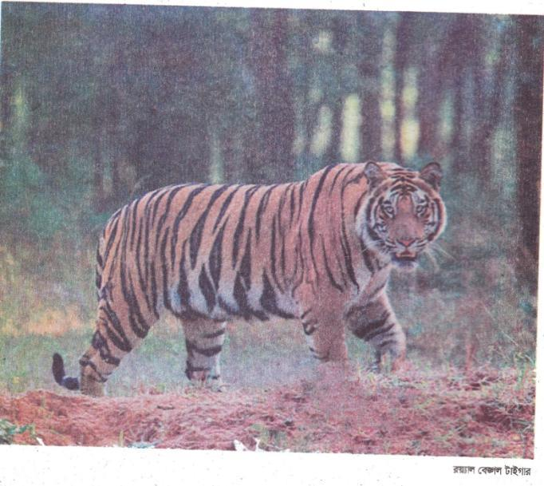
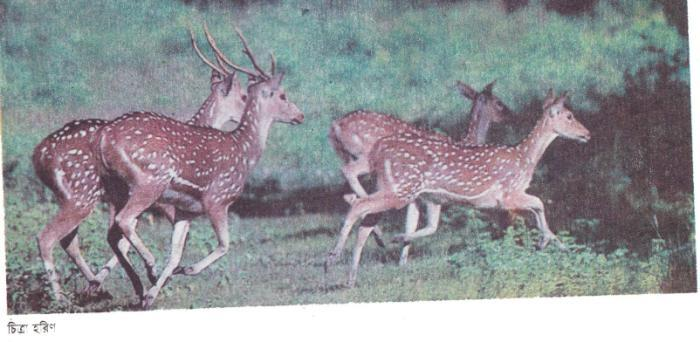
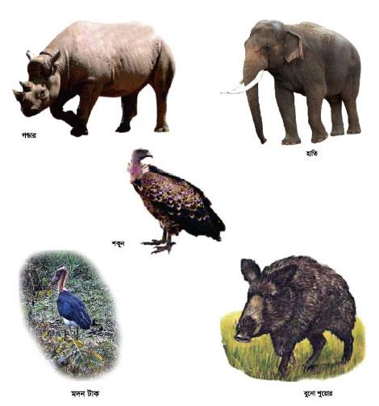

সুন্দরবনের প্রাণী
বাংলাদেশের দক্ষিণে রয়েছে প্রকৃতির অপার সম্ভার সুন্দরবন। সমুদ্রের কোল ঘেঁসে গড়ে উঠেছে এই বিশাল বন। এখানে রয়েছে যেমন প্রচুর গাছপালা, কেওড়া ও সুন্দরী গাছের বন, তেমনি রয়েছে নানা প্রাণী, জীবজন্তু।

বিশ্বের কোনো কোনো প্রাণীর সঙ্গে জড়িয়ে থাকে দেশের নাম বা জায়গার নাম। যেমন, ক্যাঙ্গারু বললেই মনে পড়ে যায় অস্ট্রেলিয়ার কথা। সিংহ বললেই মনে ভেসে ওঠে আফ্রিকার কথা। তেমনি বাংলাদেশের নামের সঙ্গে জড়িয়ে আছে রয়্যাল বেঙ্গল টাইগার বা রাজকীয় বাঘের নাম। এই বাঘ থাকে সুন্দরবনে। এ বাঘ দেখতে যেমন সুন্দর, তেমনি আবার ভয়ঙ্কর। এর চালচলনও রাজার মতো। সুন্দরবনের ভেজা স্যাঁতসেঁতে গোলপাতার বনে এ বাঘ ঘুরে বেড়ায়।
১১শিকার করে জীবজন্তু, সুযোগ পেলে মানুষও খায়। এক সময় সন্দুরবনে ছিল চিতাবাঘ ও গুলবাঘ। কিন্তু এখন আর এসব বাঘ দেখা যায় না। সুন্দরবনের রয়্যাল বেঙ্গল টাইগার বাংলদেশের অমূল্য সম্পদ। এ বাঘকে বিলুপ্তির হাত থেকে আমাদের বাঁচাতে হবে।
সুন্দরবনে বাঘ ছাড়াও আছে নানা রকমের হরিণ। কোনটার বড় বড় শিং, কোনটার গায়ে ফোটা ফোটা সাদা দাগ। এদের বলে চিত্রা হরিণ। এক সময় সুন্দরবনের প্রচুর গণ্ডার ছিল, ছিল হাতি, ছিল বুনো শুয়োর। এখন এসব প্রাণী আর নেই। তবে দেশের রাঙামাটি আর বান্দরবানের জঙ্গলে হাতি দেখতে পাওয়া যায়।
যে কোনো দেশের জন্যই জীবজন্তু পশুপাখি এক অমূল্য সম্পদ। দেশের জলবায়ু আবহাওয়া গাছপালা বৃক্ষলতা ইত্যাদি প্রাকৃতিক পরিমণ্ডলেই সে দেশের প্রাণীকুল জীবনধারণ করে। একটু লক্ষ করলেই দেখা যাবে পৃথিবীতে অপ্রয়োজনীয় প্রাণী বা বৃক্ষলতা বলতে কিছুই নেই। একসময় আমাদের দেশে প্রচুর শকুন দেখা যেত। শকুন দেখতে যে খুব সুন্দর পাখি তা কিন্তু নয়। এরা উড়ে বেড়ায় আকাশের অনেক উপরে। বাসা করে গাছের ডালে। মানুষের পক্ষে যা ক্ষতিকর, সেইসব আবর্জনা শকুন খায় এবং পরিবেশকে পরিচ্ছন্ন রাখে। কিন্তু শকুন এখন বাংলাদেশে বিলুপ্তপ্রায় পাখি।
প্রাণী বৃ্ক্ষলতা সব কিছুই প্রকৃতির দান। তাকে ধ্বংস করতে নেই। ধ্বংস করলে নেমে আসে নানা বিপর্যয় – বন্যা, খরা, ঝড় ইত্যাদি।


পশুপাখি ও জীবজন্তু প্রাকৃতিক পরিবেশের সঙ্গে মিলে মিশে থাকে। প্রকৃতিতে যদি বিপর্যয় ঘটে তবে এদের জীবনও বিপন্ন হয়। সুন্দরবনের অনেক প্রাণী প্রাকৃতিক পরিবর্তনের ফলে বিলুপ্ত হয়ে গেছে। যে সব প্রাণী আছে তাদের বিলুপ্তির হাত থেকে বাঁচাতে হবে।
১৩অনুশীলনী
১. শব্দগুলো পাঠ থেকে খুঁজে বের করি। অর্থ বলি।
|
অপার |
সম্ভার |
রয়্যাল |
|
ভয়ঙ্কর |
অমূল্য |
বিলুপ্ত |
২. ঘরের ভিতরের শব্দগুলো খালি জায়গায় বসিয়ে বাক্য তৈরি করি।
|
অমূল্য |
অপার |
সম্ভার |
|
রয়্যাল |
ভয়ঙ্কর |
বিলুপ্ত |
ক. বাংলাদেশ [………………………………………………………..] সৌন্দর্যে ভরপুর।
খ. প্রকৃতির অপার [……………………………………………..] সমুদ্রের নিচে রয়েছে।
গ. বাংলাদেশের নামের সঙ্গে জড়িয়ে আছে [……………………………..] বেঙ্গল টাইগার।
ঘ. বাঘ দেখতে যেমন সুন্দর তেমনি আবার [……………………………… .]।
ঙ. রয়্যাল বেঙ্গল টাইগার বাংলাদেশের […………………………………] সম্পদ।
চ. শকুন বাংলাদেশে এখন [………………………………] প্রায় পাখি।
৩. কথাগুলো বুঝে নিই।
|
অস্ট্রেলিয়া |
এশিয়া, ইউরোপ ও আফ্রিকার মতো একটি মহাদেশ। |
|
ক্যাঙ্গারু |
একমাত্র অস্ট্রেলিয়াতেই পাওয়া যায় এমন একটি প্রাণী। এদের চারটি পা, কিন্তু পেছনের দু-পা বড়ো আর সামনের দু-পা ছোট। এর ফলে অন্যান্য চতুষ্পদ প্রাণীর মতো এরা হাঁটাচলা করতে পারে না, পেছনের দু-পায়ে ভর দিয়ে লাফিয়ে লাফিয়ে চলে। ক্যাঙ্গারু তার বুকের নিচে একটা থলিতে বাচ্চা রাখে। |
|
চিতাবাঘ |
এক প্রকার বাঘ। অন্য বাঘের সঙ্গে চিতাবাঘের পার্থক্য। চিতাবাঘ গাছে উঠতে পারে, অন্যান্য বাঘ পারে না। চিতাবাঘ অন্যান্য বাঘের চেয়ে দ্রুত দৌঁড়াতে পারে ও গাছে উঠতে পারে। |
|
গণ্ডার |
কালো ও ধূসর রঙের চতুষ্পদ প্রাণী, উচ্চতায় ও লম্বায় গরুর আকারের। এদরে নাকের ওপরে শিং থাকে। |
৪. নিচের প্রশ্নগুলোর উত্তর বলি ও লিখি।
ক. ক্যাঙ্গারু ও সিংহ বললেই কোন কোন দেশের কথা মনে হয়?
খ. বিভিন্ন ধরনের বাঘ সম্পর্কে তুমি যা জান লেখ।
গ. দেশের জন্য পশুপাখি, জীবজন্তু কী উপকার করে তা নিজের ভাষায় লেখ।
ঘ. শকুন কীভাবে মানুষের উপকার করে?
ঙ. পশুপাখি জীবজন্তু না থাকলে প্রকৃতির কী বিপর্যয় ঘটবে বলে তোমার মনে হয়?
৫. নিচের বাক্য দুটি পড়ি।
মানুষের পক্ষে যা ক্ষতিকর সেইসব আবর্জনা শকুন খেয়ে ফেলে। সে সত্যিকার অর্থে মানুষের উপকার ছাড়া অপকার করে না।
উপরের বাক্য দুটিতে অনেকগুলো শব্দ ব্যবহৃত হয়েছে। বাক্যে ব্যবহৃত প্রত্যেকটি শব্দই এক-একটি পদ :
শকুন [..........................................] বিশেষ্য পদ
ক্ষতিকর [.......................................] বিশেষণ পদ
সে [.............................................] সর্বনাম পদ
খায় [..................................] ক্রিয়া পদ
ছাড়া [..........................................] অব্যয় পদ
পদ পাঁচ প্রকার :
বিশেষ্য,
বিশেষণ,
সর্বনাম,
ক্রিয়া,
অব্যয়।
নিচের বাক্যগুলোতে কী কী পদ আছে তা লেখ।
সুন্দরবনে বাঘ ছাড়াও আছে নানা রকমের হরিণ। কোনটার বড় বড় শিং, কোনটার গায়ে ফোটা ফোটা সাদা দাগ। এদের বলে চিত্রা হরিণ।
৬. নিচের নির্দেশনা অনুযায়ী বাংলাদেশের যে কোনো একটি প্রাণী সম্পর্কে রচনা লিখি।
|
ক. আকৃতি - |
|
খ. রং - |
|
গ. কোথায় দেখা যায় - |
|
ঘ. আবাস স্থল - |
|
ঙ. খাদ্যাভ্যাস - |
৭. ঠিক উত্তরটিতে টিক () চিহ্ন দিই।
ক. ক্যাঙ্গারু বললেই মনে পড়ে যে দেশের কথা –
১. ভারত
২. বাংলাদেশ
৩. অস্ট্রেলিয়া
৪. আফ্রিকা
খ. আফ্রিকার কথা উঠলে কোন প্রাণীর কথা মনে হয়?
১. সিংহ
২. হাতি
৩. বাঘ
৪. উট
গ. বাংলাদেশের কোন জঙ্গলে হাতি দেখতে পাওয়া যায়?
১. সিলেট ও খুলনার
২. ভাওয়াল ও মধুপুরের
৩. রাঙামাটি ও বান্দরবানের
৪. উপরের সবখানে
ঘ. কোন পাখি ক্ষতিকর আবর্জনা খেয়ে পরিবেশ পরিচ্ছন্ন রাখে?
১. ঈগল
২. শকুন
৩. চিল
৪. কাক
ঙ. কোন প্রাণীর গায়ে ফোঁটা ফোঁটা সাদা দাগ ও বড় শিং আছে?
১. চিতা বাঘ
২. চিত্রা হরিণ
৩. ভাল্লুক
৪. গণ্ডার
৮. কর্ম-অনুশীলন।
আমি এমন প্রাণীদের একটি তালিকা তৈরি করি- যাদের নাম শুনেছি, কিন্তু চোখে দেখিনি। পরে শ্রেণির সবার সাথে তা মিলিয়ে দেখি।
১৬